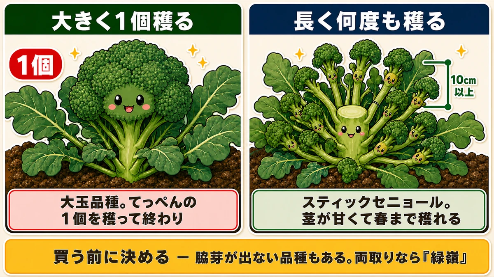
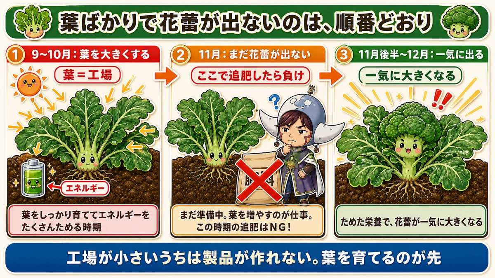
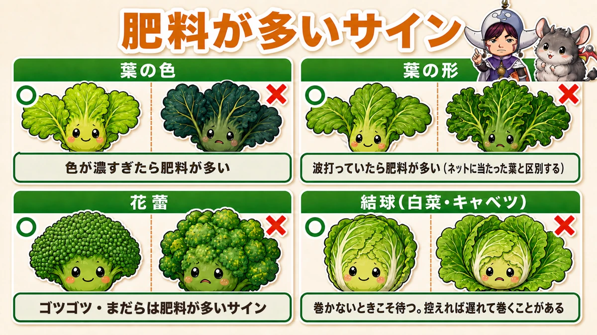
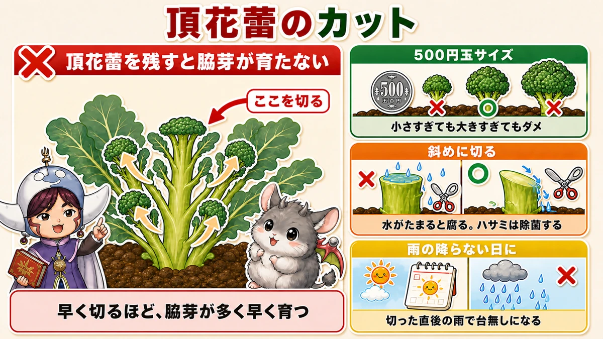
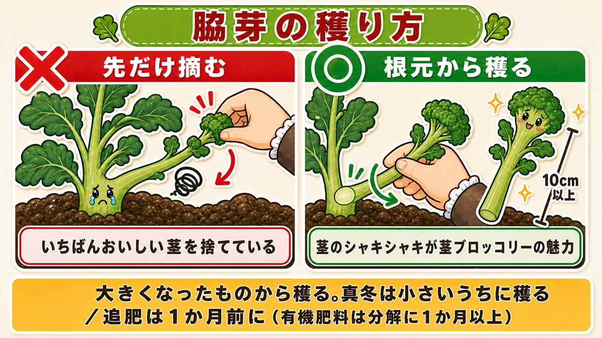
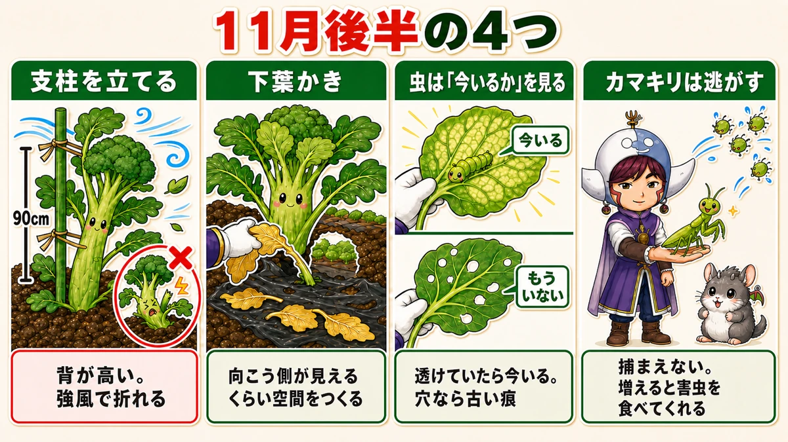

【保存版】ブロッコリーの「葉ばかり」は正常です🥦 追肥したら負け

🗨️「11月なのに、葉っぱばかりで花蕾が出てこない」
🗨️「心配だから、追肥しておこうかな」
🗨️「茎ブロッコリーを買ったのに、1個しか穫れなかった」
どうも、8150（えいこう）です🌱 家庭菜園歴8年、理科の教員免許を持っていて、有機・無農薬で野菜を育てています。
今回はブロッコリーの話です。
先に、この記事でいちばん言いたいことを言っておきますね。
葉ばかりで花蕾が出ないのは、正常です。そこで追肥をしたら、本当に失敗します。
ブロッコリーは、葉を大きくしてから花蕾を出す野菜です。順番が決まっています。だから11月に葉ばかりなのは、順調に段取りを踏んでいる証拠なんですね。
ところがここで「育ちが悪いのかな」と肥料を足してしまう。すると肥料過多になって、病気が出て、虫が来て、花蕾はまだらになる。良かれと思ってやったことで台無しになる、いちばん切ないパターンです。
私も一度やりました。だからこの記事は、それを止めるために書いています☺️
※以下の時期は中間地（関東〜関西の平野部）が目安。寒い地域は少し早め、暖かい地域は少し遅らせて✨️
📖 この記事の目次
育てる①：品種選びで、育て方が決まります

ブロッコリーは、買う前に決めておくことがあります。
大きく1個穫るのか、長く何度も穫るのか。
これで品種も、そのあとの作業も、まるっきり変わります。ここを決めずに苗を買うと、途中で「あれ、思っていたのと違う」になります。
大きく穫りたいなら
花蕾が特大になる品種を選んでください。売り場で「大玉」「特大」と書かれているものです。
てっぺんに大きなかたまりが1つできて、それを穫って終わり。スーパーで売っているあの形ですね。
長く穫りたいなら、茎ブロッコリー
こちらは花蕾が小さいかわりに、脇芽が次々と出てきます。
王道品種は「スティックセニョール」。★アスパラガスのように茎が柔らかくて甘いのが特徴です。私はこの茎の部分が好きで、毎年これを作っています。
- 早めに植えれば年内から収穫が始まる
- 冬を越させれば春まで穫れる
- 病害虫に比較的強く、捕殺と防虫ネットさえやれば被害は少ない
初めての方には、正直こちらをおすすめします。1株からの収穫回数がまるで違いますから。最近は紫色の品種もあって、育てていて楽しいですよ。
両方ほしいなら「緑嶺」
欲張りな方には、緑嶺（りょくれい）という品種があります。
大きな花蕾を穫ったあと、脇芽が次々出てミニブロッコリーがたくさん穫れる。まさに両取りですね。
ここでひとつ注意です。★ブロッコリーには、脇芽が出づらい品種もあります。「収穫後に脇芽が出るはず」と思って待っていたのに何も出てこない、というのはこれが原因です。長く穫りたい方は、タグの説明を必ず確認して買ってください。
育てる②：9月中旬までに植える。ここで9割決まります

ブロッコリーの成否は、実は植えた日でほぼ決まっています。
★植え付けは9月中旬までに終える。
これが鉄則です。理由は、この野菜の段取りにあります。
ブロッコリーの1年は、こういう段取りです
- 9〜10月に、葉を大きくして栄養をためる
- 11月以降、寒くなって成長がゆるやかになる
- 11月後半〜12月、ためた栄養で花蕾が一気に大きくなる
つまり、9〜10月は「工場を建てる期間」なんです。葉が工場で、花蕾が製品。工場が小さいうちは、製品を作れません。
★この期間に株が大きくなっていないと、花蕾を大きくするエネルギーも、脇芽を次々出すエネルギーも作れない。あとからいくら肥料を足しても取り返せないんですね。
だから「葉ばかり」は正常なんです
ここで冒頭の話に戻ります。
11月後半でも花蕾が見えないことは、普通にあります。ロマネスコやカリフローレなら、なおさらです。
そのとき見るべきなのは、花蕾ではなく葉です。
★葉が大きく元気に育っていれば、それでいい。むしろ順調です。
葉が育つと光合成をどんどん行い、エネルギーがたまる。そして11月後半から12月にかけて、花蕾が一気に大きくなります。本当に「一気に」です。あるとき見に行くと、いつのまにか真ん中にかたまりができている。
だから、葉を大切に育ててください。それが今やるべき唯一のことです。
★育てる③：肥料が多すぎるサインを覚える

ここが、この記事でいちばんお伝えしたいところです。
「育ちが悪いから追肥しよう」。この判断が、すでに肥料が多い畑では致命傷になります。
なぜ肥料が多いと病気になるのか
理屈を知っておくと、追肥をこらえられます。
窒素肥料が多すぎると、野菜は体の中で糖分をうまく作れなくなります。すると、その糖を材料にして作られるはずの物質も足りなくなる。
その結果、生理障害（病気の菌がいなくても、体の不調で起きる症状）が出ます。そして免疫力が落ちるので、病気にも虫にもやられやすくなる。
肥料をやったのに弱る。ここが直感に反するところなんですよね。
葉を見る
- ★葉の色が、モスグリーンのように異常に濃い
- ★葉が波を打っている（正常な葉は、素直にすっと開きます）
この2つが出ていたら、肥料過多を疑ってください。
ひとつ注意があります。★防虫ネットに当たっている葉も、丸まったり波打ったりして見えます。これは肥料とは無関係です。ネットをめくって、当たっていない葉を見て判断してください。
花蕾を見る
花蕾が出はじめたら、ここもチェックポイントになります。
- ★表面の凹凸が、やけに大きくゴツゴツしている
- ★色が均一でなく、まだらになっている
きれいなブロッコリーは、粒がそろっていて色が一様です。ゴツゴツとまだらは、肥料が多いサインだと思ってください。
白菜・キャベツにも同じことが言えます
同じアブラナ科なので、判断の仕方は共通です。
葉が波打っていて、結球が甘い。これは肥料過多の疑いがあります。
★肥料が多すぎると、まったく結球しないこともあります。外葉のほうに栄養が行きすぎて、巻くという作業に進めなくなるんですね。
そしてここが希望のあるところなのですが、★結球が甘くても、肥料を控えて様子を見れば、遅れながらも結球することがあります。
「巻かないから追肥」は、逆です。巻かないときこそ、待ってください。
★育てる④：茎ブロッコリーは「500円玉で斜めに切る」

ここからは茎ブロッコリーを育てている方向けの、いちばん大事な作業です。
10月中旬を過ぎると、ブロッコリーと茎ブロッコリーで管理が分かれます。
茎ブロッコリーの中心にも、花蕾ができます。これを頂花蕾（ちょうからい）といいます。平べったくて、あまり膨らみのない花蕾です。
★これを育ててはいけません。早めに切ってください。
なぜ切るのか
頂花蕾を残すと、株はそこに養分を集中させます。すると本来の目的である脇芽が育ちません。
「せっかくできたのに切るなんて」と思いますよね。私も最初は手が止まりました。でも、ここを切るか切らないかで、その後の収穫量が何倍も変わります。
★早めに切るほど、脇芽が多く、早く育ちます。
切り方のコツ3つ
- ★直径500円玉くらいの大きさで切る
小さすぎても大きすぎてもよくありません。大きくすると、その分の養分をそこに使ってしまいます。500円玉サイズなら、切ったものは普通に食べられます。大きく硬くしてしまうと食べられません。捨てる部分がないのも、早めに切る理由です。
- ★ハサミを除菌して、斜めに切る
まっすぐ水平に切ると、切り口に雨水がたまります。そこから腐ったり病気になったりする。斜めに切れば水が流れ落ちます。
ハサミの除菌も忘れずに。切り口は生傷なので、汚れたハサミは病気の入り口になります。
- ★そのあと雨が降らない日を選ぶ
せっかく斜めに切っても、直後に雨が降ったら台無しです。秋晴れのカラッと乾いた日を狙ってください。
天気予報を見て、翌日も晴れそうな日の午前中。これがベストです。
数週間すると、脇芽がどんどん伸びてきます。ここからが茎ブロッコリーの本番ですよ。
★育てる⑤：脇芽は「根元から」穫ってください

これ、本当にもったいない間違いをしている方が多いんです。
★脇芽の先の柔らかい部分だけを摘んでしまう。
気持ちは分かります。柔らかそうなところだけ穫りたくなる。でも、それでは茎ブロッコリーの魅力の半分を捨てています。
茎ブロッコリーの魅力は2つ
- 何度も収穫できて、春まで楽しめる
- ★長い茎の、シャキシャキした食感
この2つ目です。あの茎が、この野菜のいちばんおいしいところなんですよ。
だから、脇芽は根元の部分からなるべく長く収穫してください。手でひねると、ポキッと折れます。
穫るタイミングと順番
- ★10cm以上伸びたら収穫。1株から十数本出ます
- ★大きくなったものから穫る。残った脇芽に栄養が行き渡ります
- ★真冬はそこまで大きく育たないので、小さいうちに穫る
全部が大きくなるのを待っていると、いつまでも穫れません。育ったものから順に穫って、次に譲る。この回転が茎ブロッコリーのリズムです。
追肥は「1〜2月の前」に
収穫が始まったら、月に1回程度の追肥をしてください。ここは肥料を入れていいところです。
そして覚えておいてほしいのが、★1〜2月は脇芽が出づらくなること。
でも、追肥をしておけば春にあと1回は収穫できます。ここでのポイントは時間差です。
★有機肥料は分解に1か月以上かかります。
つまり「出が悪くなってから追肥」では間に合いません。1月に効かせたいなら、12月には入れておく。先回りが必要なんですね。
11月後半にやる4つのこと

花蕾が肥大する直前の、大事な仕上げ期です。
①支柱を立てる
ブロッコリーは背が高くなります。ここまで育った株が強風で折れると、本当に泣きます。
90cmの支柱を株元に挿して、紐で結んでおいてください。
実は植え付け直後にも支柱が要ります。9月の台風で飛ばされることがあるからです。★まっすぐ伸びないと、茎から根が出てくる症状が起きて、余分な養分を使ってしまいます。誘引は茎の半分より少し上を、幼いうちはふわっと結ぶくらいで大丈夫です。
②下葉かき
- 黄色く枯れた下葉
- マルチにベタッとくっついている葉
これらを取り除きます。★目安は、株の向こう側が見えるくらい空間ができること。
風通しが良くなると、病気とアブラムシがぐっと減ります。雑草もこのときに取っておきましょう。
③害虫チェック
アブラムシとヨトウムシを見ます。★葉と葉の間、そしてマルチの下にも潜んでいます。
ここで、虫が「今いるか、もういないか」を見分けるコツをお伝えします。
- ★葉がスクリーン状（薄皮を残して透けている）→ 今、葉裏にいる可能性が高い
- ★穴が大きく開いている → 古い食害痕。もういないことが多い
そして、いちばん大事なのは見る場所です。株を上から見て、★成長点とその周りの若い葉に被害があるかどうか。
古い下葉がやられていても、新しい葉が無事なら、生育は遅れても追いつきます。逆に成長点がやられていたら深刻です。時期によっては植え替えもできないので、別の野菜に切り替える判断が必要になります。
茶色や黒い糞が落ちていないかも見てください。虫本体より、糞のほうが見つけやすいです。
④カマキリは、絶対に捕まえないでください
秋のカマキリは、びっくりするほど大きくなります。
★見つけても捕殺せず、そのまま畑に逃がしてください。
卵を産んでいても構いません。翌年に赤ちゃんが生まれて増えます。カマキリが増えると、害虫を食べてくれる。無農薬でやるなら、これ以上ない味方です。
畑で大きなカマキリに出会ったら、「うちの畑は健康だ」と思っていいと思います😊
植え付け後1か月に見張ること
ここは、9月に植えた方向けの補足です。時期が過ぎている方は読み飛ばしてください。
★植えて1週間ほどで枯れなければ、根は活着したと判断していいです。
逆に、次のサインが出たら植え替えを検討してください。
- 株全体が黄色くなって葉が垂れる … 活着していない／根を虫に食べられた／水のやりすぎで根腐れ
- 株元をつまむとグラグラする、簡単に抜ける … ★根を食害されています。土の中を必ず確認してください。コガネムシの幼虫かネキリムシがいます
- グラグラして、さらに茎が柔らかい、黒く変色している … ★根腐れです。これはリカバリーが難しいので、すぐ植え替えを
- 成長点を虫に食べられた … 植え替えです
ひとつ、リカバリーできる場合があります。★植えたあとに枯れかけているとき、ポットの土とうねの土のあいだにすき間ができていることがあります。乾燥して根が伸びられない状態です。もう一度しっかり土を押して鎮圧すると、持ち直すことがありますよ。
学ぶ：ブロッコリーは、花が咲く前のつぼみです🔬
理科の時間です。
ブロッコリーとして食べている、あの緑のかたまり。あれが何なのか、考えたことはありますか。
つぼみの集まりです。
小さな粒ひとつひとつが、花のつぼみ。あれを何百個もまとめて食べているわけですね。
だから、収穫が遅れると黄色い花が咲きます。畑で放っておいたブロッコリーが黄色くなるのは、腐ったのではなく、開花です。咲いてしまうと硬くなって食べられません。
つまりブロッコリーの収穫とは、★花が咲く直前の一瞬を狙う作業なんです。他の野菜にはない、独特のタイミング勝負ですよね。
なぜ葉が先で、花蕾があとなのか
ここで、この記事の前半とつながります。
植物にとって花を咲かせることは、子孫を残す最終段階です。そこに進むには、まず体を作らないといけない。だから葉を広げて、光合成でエネルギーをためて、それから花に進む。
葉が工場で、花蕾が製品。工場が小さいうちは製品を作れない。だから「葉ばかり」は失敗ではなく、順番どおりなんです。
なぜ頂花蕾を切ると脇芽が出るのか
これも面白いしくみです。頂芽優勢（ちょうがゆうせい）といいます。
植物の先端の芽は、ホルモンを出して、下の脇芽が伸びるのを抑えています。「今は私が伸びるから、あなたたちは待っていて」という状態ですね。
先端を切ると、この抑制が外れます。すると待っていた脇芽が、一斉に動き出す。
トマトの脇芽かきも、春菊の摘心も、同じ原理です。植物の「先端が偉い」というルールを、こちらから解除している。そう考えると、いろいろな野菜の作業がひとつにつながって見えてきませんか。
お子さんと一緒なら
畑にあるものを「どこを食べているか」で分けてみてください。
- ブロッコリー … つぼみ
- キャベツ … 葉
- 大根 … 根と茎
- じゃがいも … 茎
同じ畑に、こんなに違う部分が並んでいます。そして1株だけ収穫せずに残して、花を咲かせてみてください。黄色い菜の花が咲きます。「あの緑の粒が、これになるのか」と分かる瞬間は、なかなかいいものですよ🥦
まとめ
ここまで読んでくださって、ありがとうございます！
ブロッコリーは、待てるかどうかの野菜だと思います。ポイントを整理しておきますね。
- ★葉ばかりで花蕾が出ないのは正常。葉が育っていればいい。11月後半から12月に一気に出る
- ★そこで追肥したら負け。肥料が多いサインは、葉がモスグリーンで波打つ／花蕾がゴツゴツしてまだら
- 買う前に決める。大きく1個なら大玉品種、長く穫るなら茎ブロッコリー、両取りなら緑嶺
- 植え付けは9月中旬まで。9〜10月に葉を育てられなかった株は、あとから取り返せない
- ★茎ブロッコリーの頂花蕾は500円玉サイズで、除菌したハサミで斜めに、雨の降らない日に切る
- ★脇芽は根元から長く穫る。先だけ摘むと、いちばんおいしい茎を捨てることになる
- 11月後半は支柱・下葉かき・害虫チェック。★カマキリは逃がす
全部やろうとしなくて大丈夫です。今日は畑に出て、葉の色だけ見てきてください。濃すぎず、波打っていない、素直な緑。それなら何もしなくていい。何もしないことが、いちばん効く時期もあるんです🥦
次回は毎月の定期便、11月号です。冬を越せるのは「小さい株」だという話と、株数で選ぶ防寒のやり方をまとめます🍂
茎ブロッコリー苗（スティックセニョール）
長く穫りたいならこれです。頂花蕾を500円玉サイズで切ったあと、脇芽が十数本出てきて春まで穫れます。アスパラのような甘い茎が、この品種のいちばんのごちそうです。
![[商品価格に関しましては、リンクが作成された時点と現時点で情報が変更されている場合がございます。]](https://hbb.afl.rakuten.co.jp/hgb/56d21aea.a721b2d2.56d21aeb.ffc7bd05/?me_id=1287623&item_id=10000359&pc=https%3A%2F%2Fthumbnail.image.rakuten.co.jp%2F%400_mall%2Fteshimanonaeya%2Fcabinet%2Fgold%2Fburokkori-stick-cut.jpg%3F_ex%3D240x240&s=240x240&t=picttext "[商品価格に関しましては、リンクが作成された時点と現時点で情報が変更されている場合がございます。]")

防虫ネット
9月・10月はシンクイムシとアオムシの季節です。成長点をやられると株ごと終わるので、小さいうちほどネットが効きます。11月後半からは、そのまま防鳥用に張り直してください。
![[商品価格に関しましては、リンクが作成された時点と現時点で情報が変更されている場合がございます。]](https://hbb.afl.rakuten.co.jp/hgb/56bc205d.0066fedc.56bc205e.af56d163/?me_id=1260467&item_id=10000299&pc=https%3A%2F%2Fthumbnail.image.rakuten.co.jp%2F%400_mall%2Fmarsol-morishita%2Fcabinet%2Fshouhinn%2Fbouchuu%2Fimgrc0090950099.jpg%3F_ex%3D240x240&s=240x240&t=picttext "[商品価格に関しましては、リンクが作成された時点と現時点で情報が変更されている場合がございます。]")
剪定バサミ（収穫用）
頂花蕾を斜めに切るとき、切れ味の悪いハサミだと切り口がつぶれて腐りやすくなります。使う前にアルコールで拭いて、スパッと斜めに。長く使う道具なので、いいものを1本持っておくと安心です。
![[商品価格に関しましては、リンクが作成された時点と現時点で情報が変更されている場合がございます。]](https://hbb.afl.rakuten.co.jp/hgb/56d22030.def85fa7.56d22031.b89fde86/?me_id=1250472&item_id=10022339&pc=https%3A%2F%2Fthumbnail.image.rakuten.co.jp%2F%400_mall%2Fplantz%2Fcabinet%2F01%2Ft-13.jpg%3F_ex%3D240x240&s=240x240&t=picttext "[商品価格に関しましては、リンクが作成された時点と現時点で情報が変更されている場合がございます。]")
支柱（150cm）
ブロッコリーは背が高くなるので、強風で折れます。植えた直後に1本添えておくだけで、あの悔しい事故が防げます。トンネルにも使えるので、まとめてあると便利です。
![[商品価格に関しましては、リンクが作成された時点と現時点で情報が変更されている場合がございます。]](https://hbb.afl.rakuten.co.jp/hgb/56d221a0.da732c49.56d221a1.b57a6709/?me_id=1230952&item_id=10017113&pc=https%3A%2F%2Fthumbnail.image.rakuten.co.jp%2F%400_mall%2Fnou-nou%2Fcabinet%2F5010356000109-01.jpg%3F_ex%3D240x240&s=240x240&t=picttext "[商品価格に関しましては、リンクが作成された時点と現時点で情報が変更されている場合がございます。]")
あわせて読みたい